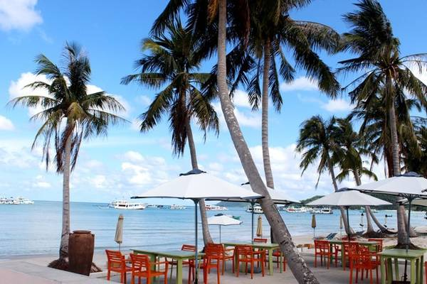
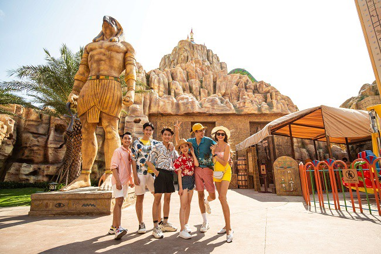

Những địa điểm tham quan Phú Quốc không thể bỏ qua
Phú Quốc là quần đảo xinh đẹp nằm sâu trong vùng vịnh Thái Lan, thuộc tỉnh Kiên Giang. Không chỉ nổi danh là “Maldives của Việt Nam” với những bãi biển đẹp tựa thiên đường, sức hấp dẫn của Phú Quốc giờ đây còn đến từ những trải nghiệm độc đáo và đẳng cấp.
Những thông tin về các hoạt động trải nghiệm, địa điểm tham quan Phú Quốc dưới đây sẽ giúp bạn có một hành trình du lịch đảo Ngọc trọn vẹn nhất.
1. Bãi Sao
Là một trong những bãi biển đẹp nhất ở Phú Quốc, Bãi Sao sở hữu đường bờ biển dài 7km với dáng cong thoai thoải tựa vầng trăng và màu cát trắng mịn như kem

Nước biển ở Bãi Sao trong vắt xanh màu ngọc bích lại ấm và ít sóng nên rất phù hợp với các gia đình có trẻ nhỏ hoặc du khách yêu thích vận động, muốn trải nghiệm các hoạt động như lặn ngắm san hô, lái mô tô nước, lướt ván, chèo thuyền kayak…
Đặc biệt, mỗi khi đêm xuống, hàng nghìn con sao biển lại bắt đầu “di dân” lên bờ, tạo nên hình ảnh vô cùng lạ mắt, thu hút sự quan tâm của du khách.2. Bãi Dài
Nằm ở phía tây bắc của đảo Phú Quốc, bãi Dài sở hữu 15km đường bờ biển kéo dài từ tận Mũi Gành Dầu cho đến Cửa Cạn. Nơi đây được xem là thiên đường du lịch nghỉ dưỡng với biển xanh - cát trắng - nắng vàng, cùng những hàng dương đung đưa trong gió.

Hơn nữa, do nằm ngay gần khu vực rừng nguyên sinh nên khí hậu ở đây lúc nào cũng mát mẻ, dễ chịu. Hiện nay, bên cạnh vẻ đẹp của thiên nhiên ban tặng, du khách đến bãi Dài còn có thêm nhiều trải nghiệm vui chơi, nghỉ dưỡng ấn tượng và sang chảnh tại Vinpearl Phú Quốc.
3. Grand World Phú Quốc
Được xem là “trái tim” của siêu quần thể Phú Quốc United Center, Grand World Phú Quốc là tổ hợp vui chơi - giải trí, nghỉ dưỡng, mua sắm, ăn uống, trình diễn nghệ thuật,… đa-zi-năng, hoạt động 24/7, bất kể ngày đêm. Trong kế hoạch du lịch Vinpearl Phú Quốc, đây là điểm đến không thể ngó lơ.
 Thăm thú Bảo Tàng Gấu Teddy, ngắm nhìn phố phường Châu u Trung Cổ, thưởng thức ẩm thực không biên giới tại phố Thượng Hải, vi vu The Charm Of Venice, khám phá Công viên Nghệ Thuật Đương Đại Urban Park, “quẩy” cực sung ở Quảng Trường Vũ Điệu Nhiệt Đới - Tropicana, hay lắng đọng cùng Show Diễn “Tinh Hoa Việt Nam”... là những trải nghiệm bạn không-thể-bỏ-lỡ khi ghé thăm “thành phố không ngủ” Grand World Phú Quốc.
Thăm thú Bảo Tàng Gấu Teddy, ngắm nhìn phố phường Châu u Trung Cổ, thưởng thức ẩm thực không biên giới tại phố Thượng Hải, vi vu The Charm Of Venice, khám phá Công viên Nghệ Thuật Đương Đại Urban Park, “quẩy” cực sung ở Quảng Trường Vũ Điệu Nhiệt Đới - Tropicana, hay lắng đọng cùng Show Diễn “Tinh Hoa Việt Nam”... là những trải nghiệm bạn không-thể-bỏ-lỡ khi ghé thăm “thành phố không ngủ” Grand World Phú Quốc.
4. Vinpearl Safari Phú Quốc
Với tổng diện tích lên đến 500ha, Vinpearl Safari Phú Quốc là công viên đầu tiên tại Việt Nam được thiết kế xây dựng theo mô hình Safari - sở thú bán hoang dã nổi tiếng trên thế giới.
Nơi đây sở hữu trên 3.000 cá thể động vật, thuộc 150 chủng loài được quy tụ từ nhiều vùng địa sinh học trong nước và thế giới như: Linh dương Ả Rập, Hổ Bengal, hồng hạc, tê giác…

Đặc biệt, đến Vinpearl Safari Phú Quốc, bạn không chỉ được tiếp xúc gần hơn với thế giới động vật muôn màu mà còn có cơ hội thử thách lòng gan dạ với trải nghiệm “nhốt người thả thú” hay hòa cùng điệu nhảy Zulu sôi động của các vũ công đến từ Nam Phi.
Vinpearl Safari chắc chắn là địa điểm tham quan Phú Quốc “must-go” trong hành trình du lịch Phú Quốc 2022 của bạn.
5. VinWonders Phú Quốc
Trong hành trình du lịch Vinpearl Phú Quốc, VinWonders Phú Quốc - công viên chủ đề lớn nhất Việt Nam - là “điểm đến ruột” của những du khách yêu thích các hoạt động vui chơi và giải trí. Công viên được chia làm 6 phân khu, tượng trưng cho 6 vùng lãnh địa như: Cung điện Hải Vương, Thế Giới Lốc Xoáy, Đại lộ Châu Âu…
Có vô số các trải nghiệm bạn có thể thử tại VinWonders Phú Quốc, từ việc hóa thân thành một anh chàng cowboy thực thụ, khám phá thủy cung huyền bí cho đến thử thách đường trượt Zipline xuyên rừng… Ngoài ra, các chương trình biểu diễn nghệ thuật đặc sắc với nhiều chủ đề khác nhau cũng là những điểm nhấn đặc sắc tại VinWonders Phú Quốc, thỏa mãn tinh thần “ham vui” của hội mê xê dịch.
6. Hòn Móng Tay
Hòn Móng Tay thuộc quần đảo An Thới, là một trong 5 hòn đảo nhỏ đẹp nhất Phú Quốc. Do không bị con người khai thác nhiều để sinh sống và phát triển nên địa điểm tham quan Phú Quốc này vẫn giữ được vẻ hoang sơ, phóng khoáng mà mẹ thiên nhiên ban tặng.

Bạn có thể thuê thuyền từ cảng An Thới ra Hòn Móng Tay và tận hưởng một ngày hòa mình vào làn nước trong xanh, cát trắng mịn màng hoặc tham gia các hoạt động thú vị như lặn ngắm san hô, câu cá, câu mực…
7. Làng chài Hàm Ninh
Làng chài Hàm Ninh nằm trên bờ biển phía Ðông của đảo Phú Quốc, sau lưng là núi rừng, trước mặt là biển cả mênh mông. Đây là ngôi làng nhỏ với những mái nhà tranh và vách tre mộc mạc. Người dân trong làng sinh sống chủ yếu bằng nghề đánh bắt hải sản, nuôi cấy ngọc trai và hải sâm.

Ghé thăm nơi đây, ngoài việc ngắm cảnh biển trời yên bình, bạn có thể thử trải nghiệm câu cá trên biển cùng với bà con ngư dân, tham quan khu nuôi cấy ngọc trai hoặc khám phá chợ hải sản sầm uất. Và đặc biệt, đừng quên thưởng thức đặc sản ghẹ Hàm Ninh tươi ngon nổi tiếng nhé.
8. Thiền viện Trúc Lâm Hộ Quốc
Một địa điểm tham quan Phú Quốc khác thu hút rất nhiều du khách thập phương tới chiêm bái và tham quan là Chùa Hộ Quốc hay còn gọi là Thiền viện Trúc Lâm Hộ Quốc. Đây là ngôi chùa lớn nhất ở Phú Quốc, sở hữu không gian khoáng đạt, địa thế phong thủy lưng tựa núi, mặt hướng biển.

Lối kiến trúc của chùa là sự kết hợp hài hòa giữa kiến trúc thời Lý và Trần, trong đó các chi tiết đều được làm bằng gỗ lim và chạm trổ tỉ mỉ. Chính giữa sân chùa có một bức tượng Phật được tạc bằng ngọc bích nguyên khối vô cùng tinh xảo. Ngoài ra, không chỉ là địa điểm tham quan Phú Quốc hấp dẫn, chùa Hộ Quốc còn được đánh giá là địa điểm ngắm bình minh đẹp nhất đảo ngọc.
9. Dinh Cậu
Chỉ cách thị trấn Dương Đông khoảng 200 mét về phía tây, Dinh Cậu có từ thế kỷ 17, là điểm đến tâm linh nổi tiếng nhất ở đảo Phú Quốc.

Dinh thờ Cậu Quý, Cậu Tài và Chúa ngọc nương nương. Đây đều là những nhân vật có thật ở miền Trung, xuất phát từ tín ngưỡng thờ bà chúa Ngọc và hai cậu con trai. Trước khi ra khơi, những ngư dân ở Phú Quốc thường tới đây thắp hương để cầu mong được che chở, không gặp phải tai ương, bão gió.
Xung quanh Dinh Cậu có những khối đá với nhiều hình thù đặc biệt. Ngắm cảnh hoàng hôn trên biển Tây tại Dinh Cậu là một trong những trải nghiệm thú vị của du khách mỗi khi đến Phú Quốc.
10. Chợ đêm Phú Quốc
Nằm ở khu vực thị trấn Dương Đông, chợ đêm Phú Quốc thường hoạt động từ 16h chiều đến khoảng 23h đêm. Không chỉ là địa điểm du lịch Phú Quốc bán đồ lưu niệm và các sản vật đặc trưng của Phú Quốc như ngọc trai, rượu sim, hồ tiêu, nước mắm… chợ đêm còn là nơi để du khách tha hồ “săn thực”..

Với hơn 50 gian hàng ẩm thực, bạn có thể thoải mái thưởng thức từ các món ăn đường phố đa dạng như: kẹo chỉ Phú Quốc, bánh tráng, kem cuộn Thái Lan… cho đến các loại hải sản tươi sống nổi danh của đảo ngọc: cá bớp nướng muối ớt, gỏi cá trích… Đi dạo, mua sắm và ăn uống ở chợ đêm là những hoạt động nổi bật trong hành trình vi vu đảo ngọc mà du khách nào cũng nên trải nghiệm.